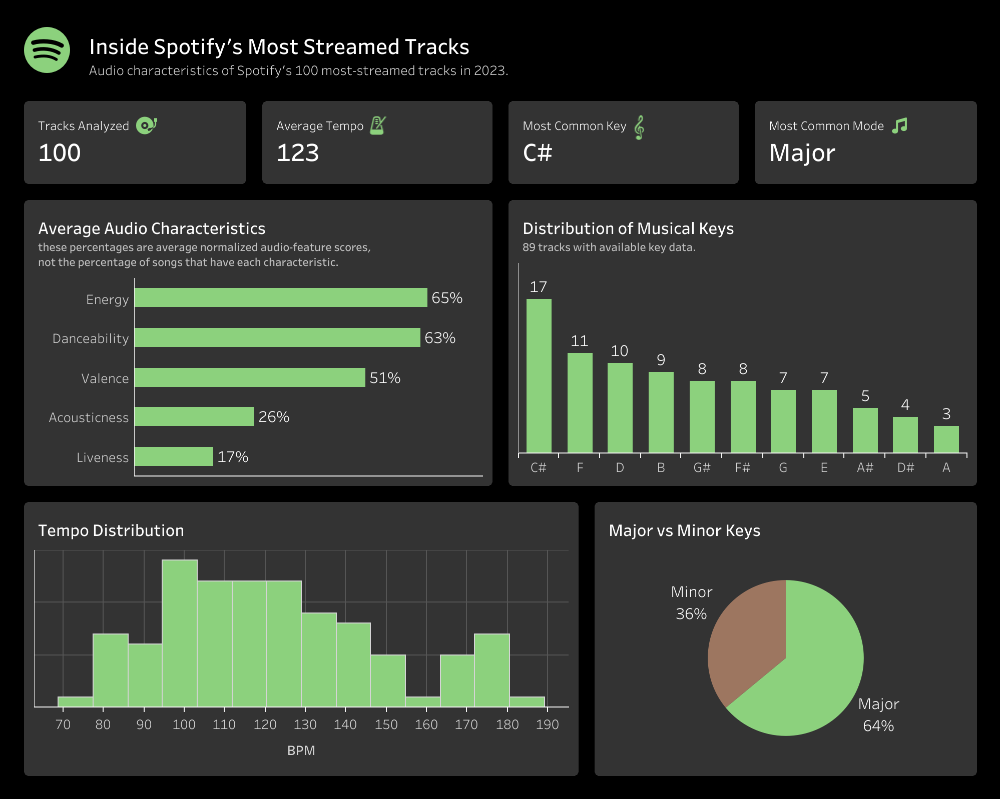

Pachara Buatim
Data Analyst
I analyze data to provide insights and support decision-making.
About Me
Hi there! I'm Pachara, and I like making sense of data. I'm a data analyst who enjoys turning raw data into meaningful insights that help people make better decisions. I take pride in uncovering patterns, asking the right questions, and paying attention to the little details that can make a big difference. I enjoy working at the intersection of data and business, where analytical thinking meets real-world problem-solving.
I'm passionate about exploring data, building insightful dashboards, and finding ways to make complex information easier to understand. Whether I'm cleaning datasets, writing queries, or visualizing trends, I focus on creating clear, reliable, and actionable insights that help teams understand what's happening and decide what to do next.
In my spare time, you can usually find me exploring new things, learning new tools, enjoying good food, or spending time with the people who matter most to me.
Projects
Inside Spotify's Most Streamed Tracks
The main objective of this project is to explore the audio characteristics of the 100 most-streamed songs in the dataset.

Blogs
A beginner's guide for Aspiring Data Analysts
Understanding the meaning of data is the first step toward becoming a successful data analyst.